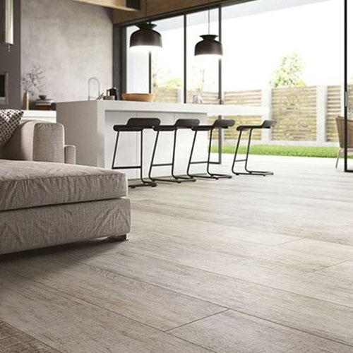

03 / PROYECTOS
Proyectos de reformas,
revestimientos y acabados
en Valencia.
Proyectos que transforman espacios.
Precisión en cada detalle.
Cada proyecto combina planificación, conocimiento de los materiales y una ejecución cuidada. Descubre una selección de trabajos de revestimiento, reformas y acabados realizados para viviendas, exteriores y espacios profesionales.
Selección de proyectos


EJECUCIÓN KERANIA
Experiencia y especialización aplicadas a cada espacio
Kerania desarrolla trabajos de revestimiento, reformas y acabados en Valencia y diferentes zonas de la Comunidad Valenciana. Cada intervención parte del análisis del espacio, los materiales y las condiciones reales de ejecución.
TU PROYECTO
¿Tienes un espacio que quieres transformar?
Cuéntanos qué necesitas y estudiaremos contigo la mejor forma de llevarlo a cabo.
Solicitar presupuesto